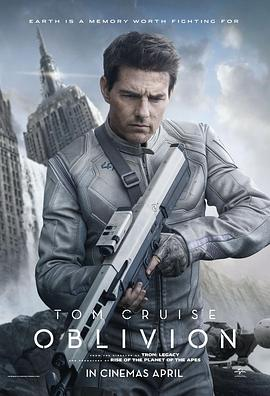

7.0
遗落战境
Oblivion
2013
美国
评分 7.0
导演:
约瑟夫·科辛斯基（Joseph Kosinski）
演员:
汤姆·克鲁斯 / 摩根·弗里曼 / 欧嘉·柯瑞兰寇 / 安德丽亚·瑞斯波罗格 / 尼古拉·科斯特-瓦尔道 / 梅丽莎·里奥 / 佐伊·贝尔
类型:
冒险,动作,悬疑,科幻
剧情简介
2077年，地球经历了核战争与外星入侵，表面已成为废墟。人类大部分移居泰坦星，只留下少数技术员维持取能装置运转。杰克·哈珀（汤姆·克鲁斯饰）是其中之一——他负责维护高空能量塔与巡逻无人机，日复一日地守望这片荒芜的蓝色星球。天空碧白如银，海洋翻滚着被吸取的能量，云端之上的指挥舱宛若天堂。而他的搭档维多利亚（安德丽亚·瑞斯波罗格饰）则在塔中监控通讯，与轨道空间站“泰坦指挥中心”保持联系。两人像最后的人类，机械而完美地重复每日流程，却也在细微的眼神中泄露出孤独与疑惑。一天夜里，杰克在巡逻途中发现坠毁的飞船。他救出沉睡舱中的女人茱莉亚（欧嘉·柯瑞兰寇饰）——一个他在梦中无数次见过的陌生人。她的出现动摇了他对现实的全部认知：为什么无人机攻击人类？为什么基地外有残存的“掠夺者”？为什么他记得从未经历过的纽约街景？真相如尘暴般袭来。杰克发现自己并非孤身一人——他只是被复制的“技术员”之一，是外星智能体利用克隆体与无人机奴役地球的工具。地表幸存的人类被流放地下，以摩根·弗里曼饰演的贝克为首，秘密筹划反攻。他们揭示：那座漂浮在轨道上的“指挥中心”，正是毁灭地球的核心。影片以洁净的银蓝视觉与极简未来设计构建出“被遗忘的地球”——寂静、壮丽、诡异。导演约瑟夫·科辛斯基用宏伟镜头展现人类与科技之间的伦理困局：当身份与记忆被篡改，什么才是真正的“自我”？杰克最终决定背叛造物主，与茱莉亚一同冲破云霄，在光与废墟之间完成人类最后的牺牲与救赎。